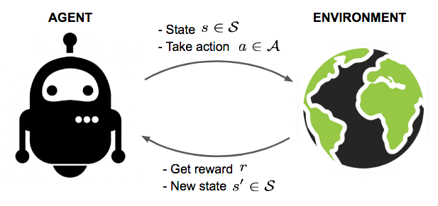
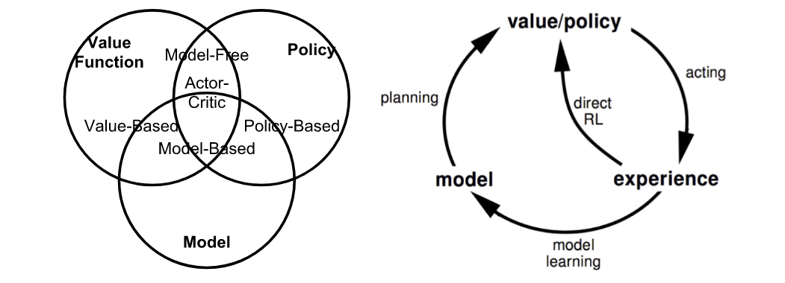
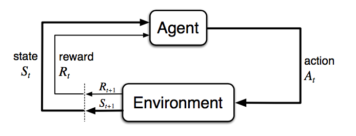
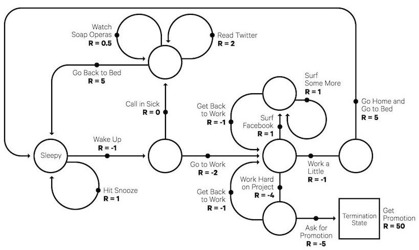
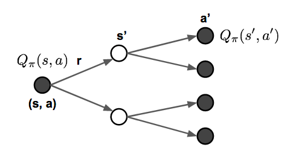
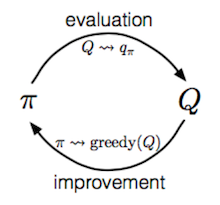

目录
- What is Reinforcement Learning? Key Concepts Model: Transition and Reward Policy Value Function Optimal Value and Policy Markov Decision Processes Bellman Equations Bellman Expectation Equations Bellman Optimality Equations
- Common Approaches Dynamic Programming Policy Evaluation Policy Improvement Policy Iteration Monte-Carlo Methods Temporal-Difference Learning Bootstrapping Value Estimation SARSA: On-Policy TD control Q-Learning: Off-policy TD control Deep Q-Network Combining TD and MC Learning Policy Gradient Policy Gradient Theorem REINFORCE Actor-Critic A3C Evolution Strategies
- Known Problems Exploration-Exploitation Dilemma Deadly Triad Issue
- Case Study: AlphaGo Zero
- References
[2020-09-03 更新：调整了 SARSA 和 Q-learning 的算法表述，使两者差异更明显。 [2021-09-19 更新：感谢“爱吃猫的鱼”，本文已有中文版]。
近年来，人工智能（AI）领域接连传来令人振奋的消息。AlphaGo 击败了围棋界最顶尖的人类职业选手。随后推出的升级版 AlphaGo Zero，在不使用任何人类先验知识的情况下，以 100:0 的比分完胜 AlphaGo。OpenAI 开发的机器人也在 DOTA2 1v1 比赛中击败了顶尖职业玩家。了解这些消息后，很难不对这些算法背后的魔法——强化学习（Reinforcement Learning，简称 RL）产生强烈的好奇。本文旨在对该领域进行一次简要概览。我们将首先介绍几个核心概念，然后深入探讨解决强化学习问题的经典方法。希望这篇文章能为初学者提供一个良好的起点，助力大家后续研究前沿成果。
什么是强化学习？
假设我们有一个处于未知环境中的智能体（agent），它可以通过与环境交互来获得一定奖励。智能体的目标是采取行动以最大化累积奖励。在现实中，这可能是一个努力获得高分的游戏机器人，也可能是一个试图利用物理物体完成任务的机器人，当然远不止这些。

强化学习（RL）的目标是从实验试错和相对简单的反馈中，让智能体学会一个良好的策略。有了最优策略，智能体就能够主动适应环境，从而最大化未来的奖励。
关键概念
现在让我们正式定义强化学习中的一组核心概念。
智能体在环境中行动。环境如何对特定动作作出反应由一个模型（model）定义，我们可能知道也可能不知道这个模型。智能体可以处于环境中的多个状态（s \in \mathcal{S}）之一，并选择众多动作（a \in \mathcal{A}）中的一个来从一个状态切换到另一个。智能体会到达哪个状态由状态之间的转移概率（P）决定。一旦采取某个动作，环境就会给出一个奖励（r \in \mathcal{R}）作为反馈。
模型定义了奖励函数和转移概率。我们可能知道也可能不知道模型的运作方式，这区分了两种情况：
- 了解模型：基于完备信息的规划，进行基于模型的强化学习（model-based RL）。当我们完全了解环境时，可以通过动态规划（Dynamic Programming，简称 DP）找到最优解。你还记得算法入门课上的“最长递增子序列”或“旅行商问题”吗？哈哈。不过这不是本文的重点。
- 不了解模型：基于不完备信息进行学习，进行无模型强化学习（model-free RL），或者尝试将显式学习模型作为算法的一部分。后面大部分内容都是针对模型未知的情况。
智能体的策略 \pi(s) 提供了指导，告诉我们在某个状态下采取什么最优动作，以最大化总奖励。每个状态都关联着一个价值函数 V(s)，它预测在该状态下按照对应策略行动所能获得的未来奖励的期望值。换句话说，价值函数量化了一个状态有多好。在强化学习中，我们要学习的正是策略和价值函数。

智能体与环境的交互是一个随时间展开的动作与观测奖励的序列，记为 t=1, 2, \dots, T。在这个过程中，智能体不断积累对环境的知识，学习最优策略，并决定下一步要采取什么动作，以便更高效地学到最佳策略。我们用 S_t、A_t 和 R_t 分别表示时间步 t 的状态、动作和奖励。因此，整个交互序列可以用一个episode（也称为“试验”或“轨迹”）完整描述，该序列在到达终止状态 S_T 时结束：
当深入研究不同类别强化学习算法时，你会经常遇到的术语：
- 基于模型（Model-based）：依赖环境的模型；模型要么已知，要么算法会显式地学习它。
- 无模型（Model-free）：学习过程中不依赖模型。
- 同策略（On-policy）：使用目标策略（target policy）产生的确定性结果或样本进行训练。
- 异策略（Off-policy）：使用由不同于目标策略的行为策略（behavior policy）产生的转移或轨迹分布进行训练。
模型：状态转移与奖励
模型是对环境的描述。有了模型，我们就可以学习或推断环境如何与智能体交互并给出反馈。模型主要包含两个部分：状态转移概率函数 P 和奖励函数 R。
假设我们处于状态 s，决定采取动作 a，接下来到达状态 s' 并获得奖励 r。这被称为一个转移步骤，可用元组 (s, a, s', r) 表示。
转移函数 P 记录了在状态 s 采取动作 a 后，转移到状态 s' 且获得奖励 r 的概率。我们用 \mathbb{P} 表示“概率”。
因此，状态转移函数可定义为 P(s’, r \vert s, a) 的函数：
奖励函数 R 预测由某个动作触发的下一个奖励：
策略
策略作为智能体的行为函数 \pi，告诉我们在状态 s 下应该采取哪个动作。它是从状态 s 到动作 a 的映射，可以是确定性的，也可以是随机性的：
- 确定性：\pi(s) = a。
- 随机性：\pi(a \vert s) = \mathbb{P}_\pi [A=a \vert S=s]。
价值函数
价值函数通过预测未来奖励来衡量一个状态的好坏，或者说一个状态或动作有多大回报。未来奖励也称为回报（return），是向前看的所有折扣奖励的总和。让我们计算从时间 t 开始的回报 G_t：
折扣因子 \gamma \in [0, 1] 会对未来的奖励进行衰减，原因如下：
- 未来的奖励可能具有更高的不确定性，例如股市。
- 未来的奖励无法立即带来好处，例如作为人类，我们可能更喜欢今天享乐而不是五年之后。
- 折扣在数学上更方便，我们不需要永远追踪未来的每一步来计算回报。
- 我们不必担心状态转移图中出现无限循环。
状态 s 的状态价值是指如果我们在时间 t 处于该状态，所能获得的期望回报 S_t = s：
类似地，我们定义一个状态-动作对的动作价值（“Q 值”；Q 应该代表“Quality”品质？）为：
此外，由于我们遵循目标策略 \pi，可以利用动作的概率分布和 Q 值来恢复状态价值：
动作价值与状态价值之间的差异被称为动作优势函数（“A 值”）：
最优价值与最优策略
最优价值函数能产生最大的回报：
最优策略能达到最优的价值函数：
当然，我们也有 V_{\pi_{*}}(s)=V_{*}(s) 和 Q_{\pi_{*}}(s, a) = Q_{*}(s, a)。
马尔可夫决策过程
用更正式的术语来说，几乎所有强化学习问题都可以表述为马尔可夫决策过程（Markov Decision Processes，简称 MDP）。MDP 中的所有状态都具有“马尔可夫”性质，这意味着未来只取决于当前状态，而与历史无关：
换句话说，给定当前状态，未来和过去是条件独立的，因为当前状态已经包含了决定未来所需的所有统计信息。

一个马尔可夫决策过程由五个元素 \mathcal{M} = \langle \mathcal{S}, \mathcal{A}, P, R, \gamma \rangle 组成，其中符号的含义与前一节的关键概念一致，并且与强化学习问题设定高度吻合：
- \mathcal{S} - a set of states;
- \mathcal{A} - a set of actions;
- P - transition probability function;
- R - reward function;
- \gamma - discounting factor for future rewards. In an unknown environment, we do not have perfect knowledge about P and R.

贝尔曼方程
贝尔曼方程指的是一组方程，它们将价值函数分解为立即奖励加上折扣后的未来价值。
Q 值也类似，
贝尔曼期望方程
这种递归更新过程可以进一步分解为同时基于状态价值和动作价值的方程。随着我们向未来多看几步，我们会按照策略 \pi 交替地扩展 V 和 Q。

贝尔曼最优方程
如果我们只关心最优价值，而不是按照某个策略计算期望，就可以直接跳到交替更新中的最大回报，而无需使用策略。回顾：最优价值 V_* 和 Q_* 是我们能获得的最佳回报，其定义如上。
不出意外，它们看起来与贝尔曼期望方程非常相似。
如果我们对环境有完备的信息，这就变成了一个规划问题，可以用动态规划求解。不幸的是，在大多数场景下，我们并不知道 P_{ss’}^a 或 R(s, a)，因此无法直接通过贝尔曼方程求解 MDP，但它为许多强化学习算法奠定了理论基础。
常用方法
现在是时候来了解解决强化学习问题的主要方法和经典算法了。在后续文章中，我计划对每种方法进行更深入的探讨。
动态规划
当模型完全已知时，我们可以按照贝尔曼方程，使用动态规划（Dynamic Programming，简称 DP）来迭代地评估价值函数并改进策略。
策略评估
策略评估的目标是针对给定的策略 \pi 计算其状态价值 V_\pi：
策略改进
基于价值函数，策略改进通过贪婪地选择动作来生成一个更好的策略 \pi’ \geq \pi。
策略迭代
广义策略迭代（Generalized Policy Iteration，简称 GPI）算法指的是一种将策略评估和策略改进相结合的迭代过程，用于改进策略。
在 GPI 中，价值函数被反复逼近，使其越来越接近当前策略的真实价值；与此同时，策略也被反复改进，逐步接近最优。这种策略迭代过程是有效的，并且总是能收敛到最优，但为什么会这样呢？
假设我们有一个策略 \pi，然后通过贪婪地选择动作生成改进后的策略 \pi’，记为 \pi’(s) = \arg\max_{a \in \mathcal{A}} Q_\pi(s, a)。这个改进策略 \pi’ 的价值必然更好，因为：
蒙特卡洛方法
首先回忆一下 V(s) = \mathbb{E}[ G_t \vert S_t=s]。蒙特卡洛（Monte-Carlo，简称 MC）方法采用了一个简单的思路：它从原始经验的完整 episode 中学习，而无需对环境动态建模，并用观测到的平均回报来近似期望回报。为了计算经验回报 G_t，MC 方法需要从完整的 episode S_1, A_1, R_2, \dots, S_T 中学习以计算 G_t = \sum_{k=0}^{T-t-1} \gamma^k R_{t+k+1}，并且所有 episode 最终都必须终止。
状态 s 的经验平均回报为：
其中 \mathbb{1}[S_t = s] 是一个二值指示函数。我们可以每次访问状态 s 时都计数（“每访问”），这样同一个 episode 中可能多次访问同一个状态；也可以只在第一次遇到该状态时计数（“首次访问”）。这种近似方法可以很容易地扩展到动作价值函数，只需统计 (s, a) 对即可。
要通过蒙特卡洛方法学习最优策略，我们采用与 GPI 类似的思想进行迭代。
